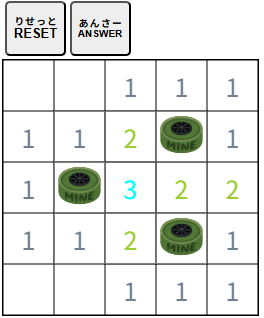

| 【マインスイーパー】 |
|
地雷を踏まずにすべてのマスを開けばゲームクリアとなります。  ・マスに書かれた数字は、隣接する８つのマスのうち地雷のあるマスの数を 示しており、それを頼りに、地雷のないマスだけをすべて開けばゲームクリアとなります。 ・クリック（タッチ）でマスを開くことができます。 ・長押しクリック（タッチ）でマスに旗を立てることができます。地雷がありそうなマスに立てると参考になるでしょう。旗をもう一度クリック（タッチ）すると消せます。 ・[RESET]ボタンをクリック（タッチ）すると別の問題になります。 |